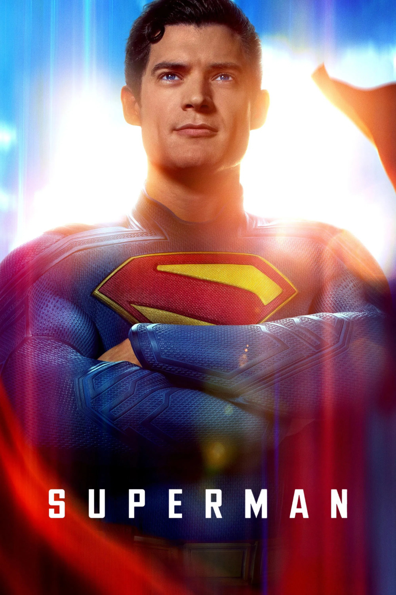

Мировая премьера: 11 июля 2025
Слоган: Смотри вверх.
Сюжет: Когда Супермен оказывается втянутым в конфликты как внутри страны, так и за рубежом, его действия по защите человечества ставятся под сомнение, что даёт миллиардеру Лексу Лютору возможность навсегда убрать Человека из стали с дороги. Сможет ли бесстрашный репортёр Лоис Лейн, вместе с другими мета-людьми Метрополиса и верным четвероногим компаньоном Супермена – Крипто, помочь ему, пока не стало слишком поздно?
Режиссёр: Джеймс Ганн
В основе: Комиксы о Супермене (США, выходят с 1938, авторы – Джерри Сигел и Джо Шустер)
В ролях: |
Дэвид Коренсвет | Кларк Кент / Супермен |
| Рэйчел Броснахэн | Лоис Лейн | |
| Николас Холт | Лекс Лютор | |
| Эди Гатеги | Майкл Холт / Мистер Террифик | |
| Скайлер Джизондо | Джимми Олсен | |
| Энтони Кэрриган | Рекс Мейсон / Человек-Элемент | |
| Натан Филлион | Гай Гарднер / Зелёный Фонарь | |
| Сара Сампайо | Ева Тешмахер | |
| Изабела Мерсед | Кендра Сондерс / Женщина-Ястреб | |
| Мария Габриэла де Фария | Анжела Спика / Инженер | |
| Уэнделл Пирс | Перри Уайт | |
| Прюитт Тэйлор Винс | Джон Кент | |
| Нева Хауэлл | Марта Кент | |
| Златко Бурич | Президент Василь Гуркос | |
| Брэдли Купер | Джор-Эл | |
| Фрэнк Грилло | Генерал Рик Флаг ст. | |
| Шон Ганн | Максвелл Лорд | |
| Джон Сина | Кристофер Смит / Миротворец |
Бюджет: $ 225 млн.
Кассовые сборы в США: $ 354 млн.
Кассовые сборы в мире: $ 617 млн.
Продолжительность: 1 ч. 59 мин.
Рейтинг: 7.1